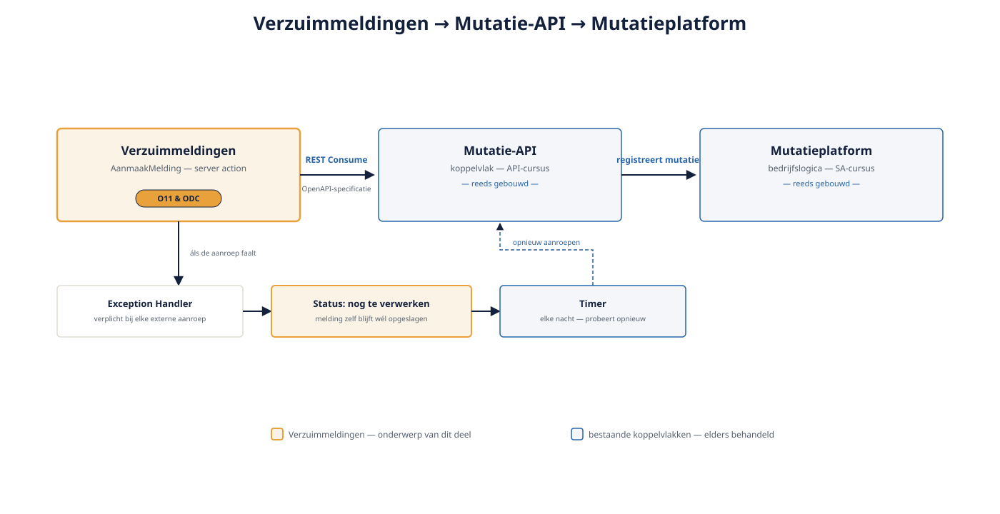

Deel 9 — Integratie basis: REST consumeren en exposen, timers
Slidedeck · Ductus-cursus OutSystems · Niveau 1 — Fundament · deel 9 van 30 · 14 slides
Slide 1 — Title: OutSystems: Fundament
OutSystems: Fundament
Deel 9 — Integratie basis: REST consumeren en exposen, timers
Slide 2 — Bullets: Waarom dit deel er is
Waarom dit deel er is
- Verzuimmeldingen leeft niet geïsoleerd
- Moet een mutatie registreren bij het Mutatieplatform
- Koppelt terug op de Mutatie-API uit de API-cursus

Slide 3 — Section: REST consumeren
REST consumeren
Slide 4 — Bullets: Van specificatie naar aanroepbare actie
Van specificatie naar aanroepbare actie
- Importeer API-specificatie (OpenAPI/Swagger)
- Platform genereert client-structuren automatisch
- Aanroep hoort in de server action
Slide 5 — Statement: Elke externe aanroep faalt ooit.
Elke externe aanroep faalt ooit.
De vraag is: wat gebeurt er dan?
Slide 6 — Bullets: Foutafhandeling bij externe aanroepen
Foutafhandeling bij externe aanroepen
- Exception Handler verplicht
- Keuze: melding wél opslaan, mutatie apart afhandelen
- "Nog te verwerken" — voorproefje van deel 18
Slide 7 — Opdracht: Opdracht 9.1 — Consumeren, exposen of timer?
Opdracht 9.1 — Consumeren, exposen of timer?
Drie situaties bij Verzuimmeldingen.
→ Werkboek 9.1
Slide 8 — Opdracht: Baan A / Baan B
Baan A / Baan B
A — Mutatie-API consumeren in Service Studio
B — Zelfde integratie in ODC Studio
→ Werkboek, eigen baan
Slide 9 — Section: REST exposen en Timers
REST exposen en Timers
Slide 10 — Bullets: Zelf een bron worden
Zelf een bron worden
- REST Expose: Verzuimmeldingen als data-bron voor anderen
- Zelfde autorisatieregels als schermen (deel 8)
- Timer: geplande, herhalende achtergrondtaak
Slide 11 — Table: Integratie: O11 versus ODC
Integratie: O11 versus ODC
| O11 | ODC | |
|---|---|---|
| REST consumeren/exposen | Functioneel identiek | Functioneel identiek |
| Timer-beheer/monitoring | Via LifeTime | Via de Portal |
Slide 12 — Opdracht: Reflectieopdracht 9.2
Reflectieopdracht 9.2
Waarom de melding wél opslaan als de API-aanroep faalt?
→ Werkboek 9.2
Slide 13 — Bullets: Kernpunten deel 9
Kernpunten deel 9
- REST Consume: automatisch gegenereerde client, aanroep in server action
- Elke externe aanroep binnen een Exception Handler
- REST Expose: zelfde autorisatieprincipe als schermen
- Timer: geplande achtergrondtaak, beheer verschilt (LifeTime/Portal)
Slide 14 — Section: Volgende deel: Capstone
Volgende deel: Capstone